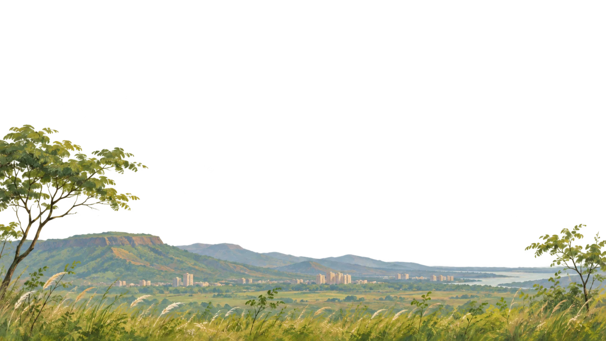

A WINDOW TO TODAY
Navi Mumbai
--°Finding today's atmosphere...
Connecting
Live weather uses approximate Navi Mumbai coordinates. The environment is an artistic interpretation.
Explore combinationsTime, sky, air, moon & landscape Open simulation studio
SIMULATION · NOT LIVE DATA
Shape the atmosphere while the original artwork stays in view. Nothing here changes your saved location or weather feed.
Sun and moon positions are computed for the selected date, time and current approximate area. A manually changed lunar phase is an artistic override; moon position remains astronomical.
AT YOUR FINGERTIPSCustomize
Pinned Apps
RESOURCE PULSELAYOUT STUDY · NO ACCOUNT DATA
A quiet overview
PreviewCodex allowance—
Private reading
Firestore—
Private reading
Local systems—
Private status
LOCAL COMPANIONSUI PREVIEW
GT PapersStatus not loaded
One PieceStatus not loaded